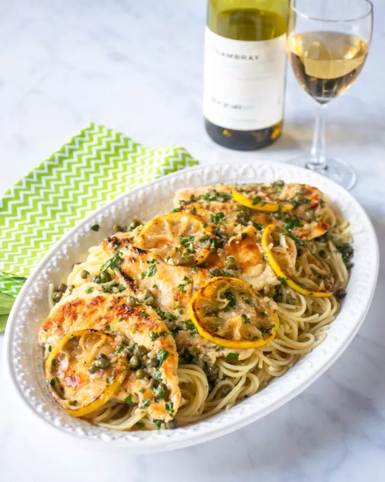

Chicken Piccata is a classic Italian dish that consists of pan-fried chicken cutlets in a lemon butter sauce with capers. The combination of tart and savory flavors makes this dish an all-time favorite in many households. Although the sauce has a luxurious butter finish, it feels bright and light and full of flavor.
Chicken Piccata is a quick and easy dinner to prepare. It's perfect for a family weeknight meal, but you can also dress it up to work as a main course for entertaining with a side vegetable or salad.
The preparation time is usually around 10-15 minutes, and the cooking time is about the same. This means that you can have a delicious and satisfying meal on the table in under 30 minutes. This is perfect for those busy weeknights when you don’t have a lot of time to spend in the kitchen. That said, I truly believe that you could serve Chicken Piccata for a dinner party too. Plating it up family style looks impressive and appealing.
PREP TIME: 15 minutes | COOK TIME: 10 minutes | TOTAL TIME: 25 minutes | SERVINGS: 4 people
You will need some basic ingredients, including chicken breasts, flour, butter, olive oil, lemon juice, chicken broth, a shallot, some garlic, parsley and capers. Once you have all your ingredients ready, the preparation is simple. First, you’ll need to slice or pound the chicken breasts until they are thin and even. Then, you’ll dredge the chicken in flour and sauté them in olive oil until they are golden brown – it doesn’t take long, just 2 minutes per side. Hold the browned chicken in a warm oven while you make the sauce by adding the shallot, garlic, chicken broth, lemon juice and capers to the pan. Finally, swirl in butter at the end for that luxurious mouthfeel and add the fresh parsley. Serve the chicken with the sauce spooned over the top.
Chicken Piccata can be served with a variety of sides, depending on your personal preference. One classic option is to serve it with a side of pasta, such as thin spaghetti or linguine, which can be tossed with some of the extra sauce. Another great option is to serve it with a side of roasted vegetables, such as asparagus or green beans. These can be roasted in the oven with a little olive oil, salt, and pepper while the chicken cooks on the stove. I even like it with some simple steamed broccoli, but a simple side salad can also be a great option to balance out the flavors of the dish. Consider a mix of greens with some cherry tomatoes, cucumber, and a light vinaigrette dressing. Some crusty bread or garlic bread can also be served to soak up any leftover sauce. Of course, a glass of white wine is an obvious accompaniment.